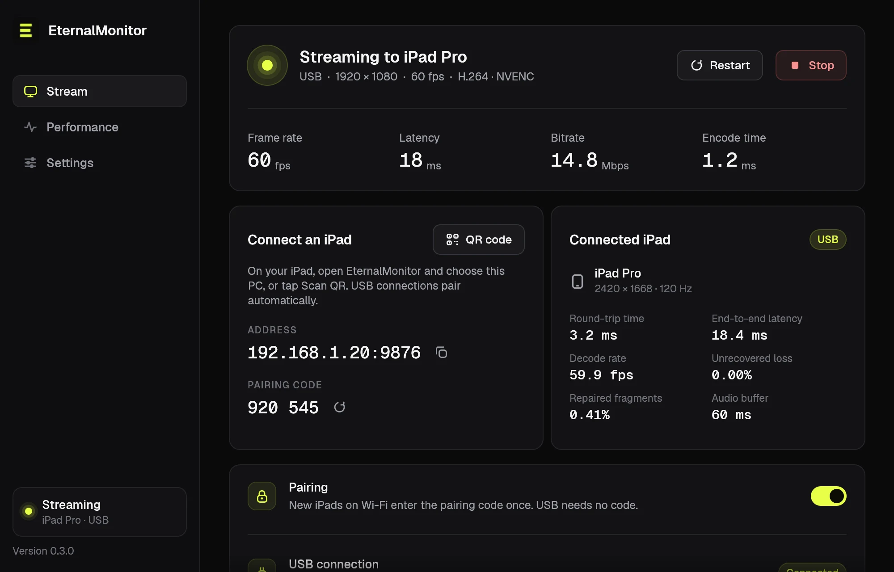
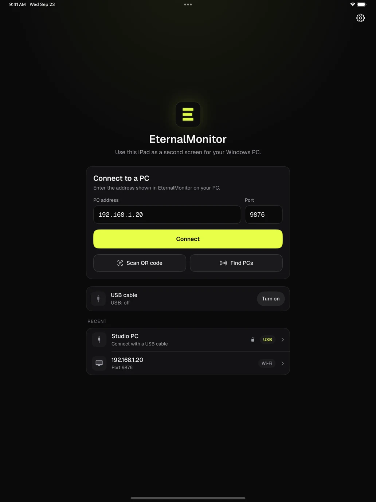

Extend or mirror
Use the iPad as an extra screen, or show a monitor you already have. The virtual display only exists while you stream.
Extend or mirror your desktop onto an iPad, then tap, drag and draw on it to control your PC. Free, with no account or subscription.


Mirror or extend, then work on the iPad as if it were part of your PC. If the Wi-Fi drops, the stream reconnects by itself.
Use the iPad as an extra screen, or show a monitor you already have. The virtual display only exists while you stream.
Tap, scroll and type to control your PC. Draw with Apple Pencil pressure and tilt through Windows Ink. Drawing mode ignores fingers on the canvas.
Stream over your home network, or plug in a cable for a steadier link. USB takes over a Wi-Fi session automatically.
Your PC's sound plays on the iPad, streamed with Opus next to the video. Mute it from either side.
Hardware H.264 on NVIDIA, AMD and Intel GPUs, with HEVC as an option. Packet repair helps the picture recover when Wi-Fi drops data.
A six-digit code keeps other devices on your network out. USB connections are trusted automatically.
One installer sets up everything on the PC. There's no account to create.
Run the installer. It sets up the EternalMonitor app and the virtual display driver it uses to extend your desktop.
Choose your PC from the list, scan the QR code it shows, or plug in a USB cable.
Enter the six-digit code the first time you connect over Wi-Fi. After that the iPad reconnects on its own.
Version 0.3.0 includes USB, PC audio, pairing, keyboard control, Apple Pencil drawing and packet repair. Install the Windows release with iPad v0.3.0, TestFlight build 143. Get both on the download page, including the current TestFlight availability.
See the release notes for setup details and known issues.
Yes. EternalMonitor is open source under the MIT license. There's no account, subscription or ads.
No, the host runs on Windows. On a Mac, Sidecar already turns an iPad into a second display.
Wi-Fi is the easiest way to start. A USB cable gives a steadier link, and plugging one in takes over the Wi-Fi session automatically. USB needs the Apple Devices app from the Microsoft Store, open on the PC while you stream; EternalMonitor tells you if it is closed or missing. The setup guide walks through Wi-Fi and USB step by step.
Not yet. Pairing stops other devices from connecting, but the video travels unencrypted, so stream at home or on another network you trust rather than on public Wi-Fi.
The iPad app is distributed through TestFlight. The download page has the public invite and availability for v0.3.0, build 143. Install it with the v0.3.0 Windows release. Developers can also build it from source.
Download the Windows app, open the iPad app, and you're a minute away from a second screen.